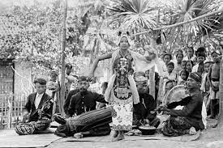
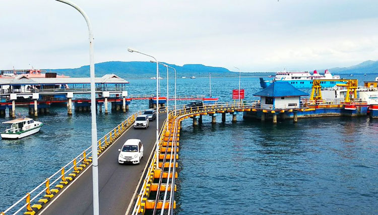

Apa itu Banyuwangi

Banyuwangi atau Byanyuwangai adalah sebuah wilayah kabupaten di Provinsi Jawa Timur, Indonesia. Ibu
kotanya adalah Kecamatan Banyuwangi atau sering disebut Kota Banyuwangi. Kabupaten ini terletak di ujung
timur pulau Jawa, di kawasan Tapal Kuda, serta wilayahnya berbatasan dengan Kabupaten Situbondo dan
Kabupaten Bondowoso di sebelah utara, Selat Bali (Provinsi Bali) di sebelah timur, Samudera Hindia di
sebelah selatan, serta Kabupaten Jember dan Kabupaten Bondowoso di sebelah barat. Kabupaten Banyuwangi
merupakan kabupaten terluas di Jawa Timur. Di pesisir Kabupaten Banyuwangi, terdapat Pelabuhan Ketapang,
yang merupakan penghubung utama antara Pulau Jawa dengan Pulau Bali (Pelabuhan Gilimanuk). Masyarakat
penghuni daerah ini adalah suku Jawa Osing / Wong Blambangan.
Ketapang

Ketapang adalah sebuah desa di Kalipuro, Banyuwangi, Jawa Timur. Dinamakan "Ketapang" karena di daerah
tersebut banyak tumbuh pohon ketapang. Desa ini dikenal karena pelabuhan penyeberangan dengan ferinya
yang ramai dilalui yang terhubung ke Pelabuhan Gilimanuk di Melaya, Jembrana, Bali. Desa Ketapang yang
terletak di Kecamatan Kalipuro adalah salah satu desa yang beruntung di Banyuwangi ini, karena namanya
tercatat dalam berbagai sumber sejarah sehingga menjadikan desa ini termasuk salah satu desa tertua di
Banyuwangi. Nama Ketapang kemungkinan besar berawal dari tanaman Ketepeng. Meski mudah ditemukan di mana
saja, tanaman pohon ketapang yang memiliki nama ilmiah Terminalia catappa ini sebenarnya merupakan
tanaman tepi pantai, sesuatu yang layak banyak ditemukan di wilayah Desa Ketapang yang memang berupa
daerah pesisir.